En principio el lenguaje HTML tenía como finalidad poder transmitir datos entre ordenadores de forma sencilla, que fueran interpretados por un programa (denominado "Browser", traducido como "navegador"). Y era estupendo. Más tarde, alguien quiso distribuir las cosas en la pantalla de forma un tanto diferente al texto corrido, algo más estético, y dado que el lenguaje y sus intérpretes ya contaban con un etiquetado para dibujar tablas, se dijo: "¿por qué no usar la rejilla de una tabla para colocar las cosas en los lugares que yo quiera de la pantalla?". Y fue.
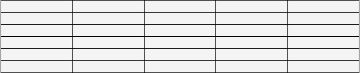 [D]Era una manera cómoda de colocar cosas en cualquier parte, comenzando por establecer una rejilla con una tabla como espacio básico de diseño, e introduciendo los datos en sus celdas, aunque estos nada tuvieran que ver con datos tabulados.
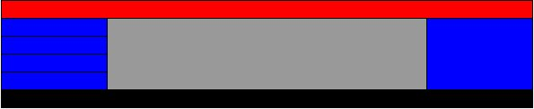 [D]En ese momento todo el etiquetado referente a formatos, tamaños, colores, resaltados, etcétera, se introducía también en el propio etiquetado HTML, lo que producía el enorme problema de que cuando alguien quería cambiar el color al texto de un apartado de la página lo hacía directamente ahí, sin problema, pero si quería cambiar el color o tamaño de los títulos de todas sus páginas o el ancho de éstas, tenía que ir una por una cambiando cada etiqueta, además de producir una sobrecarga de código en cada página.
Entonces apareció el marcado CSS (Cascading Style Sheets, "Hojas de Estilo en Cascada"). Su principal virtud era conseguir la separación del contenido de su presentación, por lo que se podía tener el contenido limpio por un lado y todos los detalles de su presentación por otro. Una enorme ventaja de cara a modificar los estilos de presentación de cientos de páginas al mismo tiempo, porque en realidad cada una de ellas sólo guardaba el contenido y una referencia a cómo se le aplica el estilo, y es en la hoja de estilo donde se establecen los parámetros que darán forma a esa etiqueta.
Su segunda gran virtud era que proporcionaba métodos para ubicar cajas o divisores en la pantalla, de manera que ya no era necesaria esa rejilla de la tabla para colocar cosas en distintas partes de la página. Posteriores desarrollos como XSL llevaron esto todavía mucho más lejos, pero estos de momento quedan fuera del ámbito de esta pequeña guía.
Pues bien: si ya tenemos un método práctico y robusto para ubicar las cosas en la pantalla de la manera que más nos guste, ¿para qué seguir usando esa rejilla de fondo, que nos obliga a muchas cosas que no deseamos, es poco flexible y sobrecarga al navegador del visitante de nuestras páginas? En definitiva: ¿para qué seguir usando las tablas para maquetar páginas Web, si ya no son necesarias?
En esta pequeña guía pretendemos mostrar cómo utilizar las técnicas a nuestro alcance a través de XHTML y CSS para olvidarnos para siempre de la "rejilla de diseño" que suponen las tablas, y comenzar a utilizarlas para lo que están pensadas desde el principio: mostrar datos tabulados.
También pretendemos mostrar cómo estructurar correctamente un archivo HTML, de manera que sea más compatible, rápido, eficaz y accesible tanto para los lectores humanos como para los buscadores y las herramientas de software de todo tipo.
Volver al índiceLa propuesta es, como se ha dicho, empezar a olvidarnos de la rejilla de celdas que forman una tabla como base del diseño y empezar a comprender cómo el diseño a través de cajas y CSS es mucho más flexible y cómodo para componer una página Web.
Hay muchas personas que piensan que es más difícil maquetar a través de cajas y CSS, pero desde ya es una idea que nos vamos a quitar de la cabeza; su comportamiento y su forma de trabajar es algo diferente de las tablas, pero eso no quiere decir que nos vaya a costar más aprenderlo. Sobre todo, vamos a dejar de comparar su dificultad y sus prestaciones, entre otras cosas porque usar la rejilla de la tabla es ya una cosa del pasado, y compararla no tiene ninguna utilidad; sencillamente vamos a aprender a hacer las cosas bien, comprendiendo en poco tiempo la lógica de este lenguaje y sus enormes prestaciones. Sólo usaremos de vez en cuando las tablas como analogía para explicar algún tipo de comportamiento.
En definitiva, vamos a comprender cómo ubicar las cosas a nuestro gusto a través de CSS y pronto nos daremos cuenta de que es un lenguaje diseñado para ello, por lo que se nos presentará como mucho más flexible y potente.
Volver al índicePor si alguien tiene dudas de por qué debería empezar a pensar en crear sus páginas Web mediante CSS en lugar de tablas y otros objetos obsoletos para la maquetación, estas son algunas razones de peso.
Diseñar basándose en los estándares es la mejor manera de garantizarse que nuestras páginas son compatibles con todos los dispositivos de navegación que los respeten, siguen determinadas pautas comunes en todo el mundo y son lo más "amigables" posible tanto para visitantes como buscadores y robots de indexado de contenido.
La accesibilidad es uno de los temas que cobran mayor importancia hoy en día en Internet, no sólo por conciencia social de garantizar el acceso a nuestras páginas a la mayor cantidad posible de gente y sectores específicos, sino también para asegurarnos de que no estamos poniendo trabas innecesariamente a las personas que acuden a nuestro sitio Web. Es por tanto imprescindible que utilicemos los medios a nuestro alcance para garantizar dicha accesibilidad en nuestros diseños, algo que conseguiremos siguiendo las pautas de orientación recomendadas por los organismos internacionales especializados, basadas en un correcto etiquetado y por supuesto la utilización de XHTML y CSS en lugar de otros medios como el diseño con tablas o el uso de la tecnología flash.
Una página Web bien estructurada, y con el contenido perfectamente separado de la presentación, siempre va a ser mucho más rápida en su carga en el navegador, evitando código innecesario y ahorrando ancho de banda. Las tablas fuerzan a que el dibujado del HTML sea más lento y laborioso para el navegador, cargándolo de trabajo innecesariamente.
Como ya hemos dicho, aunque en principio parece algo más costoso, en poco tiempo comprenderemos que el maquetado mediante CSS es mucho más sencillo y flexible que con tablas. Suele ocurrir que cuando los diseñadores están acostumbrados a hacer las cosas de una manera les cuesta cambiar la forma de pensar (como a todos en nuestros propios ámbitos), y es que el ser humano es un poco reaccionario por naturaleza. Me suelo encontrar con gente que piensa que con las tablas es capaz de hacer cosas que no se pueden hacer con CSS (algo que siempre pongo en duda), basándose casi siempre en la falta de experiencia en su utilización, pero obviamente, lo que nunca se les ocurre pensar es en la cantidad de cosas que podrían hacer con CSS que no se pueden hacer con tablas o es mucho más complicado (realizar solapamientos, crecer zonas independientemente de otras, fijar posiciones estáticas en pantalla, etcétera).
Y por supuesto, el tema estrella; el "SEO" (Search Engine Optimization, "Optimización para Motores de Búsqueda"). A los buscadores les gustan los estándares, el código limpio, la semántica de un sitio, la facilidad de su indexado, etcétera. Solamente con leer un poco acerca de las recomendaciones de los principales buscadores, comprenderemos enseguida que si queremos conseguir una buena posición en sus resultados debemos crear el código más limpio, semántico y accesible posible. Hoy en día la mayoría de los buscadores penalizan el diseño mediante tablas tanto como el código farragoso e inteligible, las etiquetas obsoletas o en general, la despreocupación del diseñador por sus visitantes. Esto responde a una razón muy sencilla: ellos están obligados a ofrecer la mejor calidad posible, y cuando tienen que decantarse entre miles y miles de páginas disponibles sobre un mismo tema, evidentemente prefieren mostrar primero las que muestran una mayor fiabilidad, coherencia, y sobre todo, un mayor respeto por los visitantes a través del contenido, la accesibilidad o la proximidad a los estándares.
Quizá esta razón debería ser más que suficiente para que muchos gerentes y diseñadores experimentados se plantearan que no pueden seguir descuidando su forma de estructurar el código y el respeto hacia la usabilidad, la accesibilidad y los estándares.
Volver al índiceBien, llegados a este punto, lo que más nos puede interesar es saber cómo hacerlo, porque efectivamente, ya hemos oído y leído muchas razones para dejar de maquetar con tablas y empezar a hacerlo con CSS, pero hasta ahora, la mayor parte de esas recomendaciones no suelen ir acompañadas de explicaciones claras (y en castellano) sobre cómo hacerlo.
A continuación vamos a intentar desarrollar paso por paso lo que deberíamos hacer para comenzar la tarea y seguir adelante de una forma más o menos ordenada. Vamos allá.
Como decíamos, nos olvidamos ya de que disponemos de una rejilla de celdas para colocar las cosas, y por lo tanto pensamos en un lienzo en blanco y toda una serie de cajas en nuestras manos, del tamaño y color que nos apetezca, que aprenderemos a disponer como más nos guste en la pantalla.
Ya no hay celdas, con tablas dentro de una celda que ocupa siete filas y dos columnas, y todo ese tipo de cosas: ahora tenemos directamente una caja a la que asignaremos propiedades como color de fondo, borde, alto, ancho o posición en la pantalla. ¿Y cómo la colocaremos donde queremos? Eso lo iremos viendo un poco más adelante.
Lo que sí vamos a pensar es que, de la misma manera que antes hacíamos la rejilla con una tabla, ahora vamos a empezar por colocar una caja contenedora, en la que iremos poniendo todas las demás cosas. No siempre será imprescindible usarla, pero es una buena manera de que empecemos a concebir el diseño de forma más parecida al diseño gráfico: un diseñador profesional abre su programa con un documento nuevo en blanco, al que comienza dando las medidas del trabajo a realizar y colocando unas guías para la sangría en la guillotina de la imprenta, con lo que establece ya una especie de contenedor, de cuyos límites no debe salir para que el conjunto funcione correctamente. Pues bien, de la misma manera nosotros creamos un contenedor dentro del cuál iremos colocando todo, lo que nos será muy útil para dar las dimensiones y colocación de la página completa respecto a la pantalla.
<div id="contenedor">
[...]
</div>
Ahora ya deberemos empezar a pensar cómo y dónde queremos ubicar los contenidos de la página, y el cómo hacerlo lo veremos dentro de poco. En primer lugar tendremos en cuenta que lo primero es realizar un esquema mental o con lápiz y papel de lo que vamos a hacer, vamos, como lo hacíamos antes o como lo hace un diseñador gráfico.
Pero empecemos por el principio, y antes de ponernos manos a la obra, vamos a ver cómo se debe encabezar un documento HTML para que todo vaya bien y sea conforme a los estándares actuales, y qué pequeños cambios debemos hacer a la hora de escribir las etiquetas HTML para adentrarnos en el marcado XHTML. Son pocas cosas a tener en cuenta y muy sencillas de recordar, así que no hay que asustarse. Una de las más importantes va a ser que a partir de ahora nunca vamos a escribir el formato en las propias etiquetas, sino absolutamente todos los estilos y formatos irán en la citada hoja de estilo.
Volver al índiceLa sintaxis del lenguaje XHTML toma su base de la incorporación al lenguaje HTML de determinados parámetros del metalenguaje XML. Esto deriva en unas pocas pautas que debemos observar a la hora de escribir nuestras etiquetas. Esta incorporación no se traduce en nuevas etiquetas HTML ni diferentes funcionalidades de las existentes, sino en el cumplimiento de unas normas básicas a la hora de escribir el código de siempre:
A) tanto las etiquetas como sus atributos deben ser siempre escritas en minúsculas:
<p class="parrafo">Algo de texto</p>
B) todas las etiquetas deben ser siempre cerradas. No podemos dejar etiquetas abiertas y que el navegador se las apañe para entender dónde se cierran; siempre debemos cerrarlas.
<p>Algo de texto</p>
<p>Más texto</p>
C) las etiquetas deben cerrarse correctamente en el orden que se abren, o digamos que si siempre deben ser cerradas, deben mantener su anidamiento de forma correcta:
<div><p><strong>Algo de texto</strong></p></div>
D) las etiquetas vacías o "no pareadas" deben siempre cerrarse en sí mismas. Estas son la clase de etiquetas que no encierran contenido y que por tanto deben ser "autocerradas" con la barra de cierre en la propia etiqueta:
<br/>, <hr/>, <img ... />
E) Los atributos siempre deben estar entrecomillados:
<a href="http://www.google.es">Enlace</a>, <div class="miclase">...</div>
Y no hay mucho más de lo que preocuparse; sólo observar estas pautas a la hora de escribir nos evitará muchos dolores de cabeza. En resumen: las etiquetas en minúsculas, siempre cerradas, bien anidadas, las vacías con la barra de cierre tras el nombre y todos los atributos siempre con comillas. Sencillo, ¿no?
Volver al índiceEl "Doctype" es la declaración del tipo de documento que usaremos al principio del mismo, de manera que en primer lugar declararemos cuál es la DTD (o plantilla de estructura) que usaremos para analizar nuestro documento, y en segundo lugar informemos al navegador cómo debe tratarlo.
Aunque parezca raro (por poco conocido), los navegadores tienen más de una forma de funcionar, y pueden existir diferencias en el dibujado de los elementos en función del tipo de documento que estén intentando pintar. Es por esto que una declaración del tipo le dirá al navegador que sistema de dibujado de los que tiene internamente implementados debe usar para mostrar nuestro documento.
Como ya existe mucha literatura en la red sobre el asunto no me extenderé en explicar cuál es cada uno y cuál será el más adecuado en cada situación. Para eso lo mejor será echar un vistazo al texto oficial de la W3C al respecto, o la explicación en castellano de la Wikipedia.
Lo que sí diré es que los dos más utilizados en el etiquetado actual son el transicional, que como su propio nombre indica está pensado para una transición hacia el estructurado más correcto, ya que es algo menos restrictivo en la utilización de las etiquetas XHTML (y que poco a poco va cayendo en desuso):
<!DOCTYPE html PUBLIC "-//W3C//DTD XHTML 1.0 Transitional//EN"
"http://www.w3.org/TR/xhtml1/DTD/xhtml1-transitional.dtd">
y el estricto, que indica ya con claridad cómo debe ser la estructura de un documento XHTML para ceñirse a los estándares:
<!DOCTYPE html PUBLIC "-//W3C//DTD XHTML 1.0 Strict//EN"
"http://www.w3.org/TR/xhtml1/DTD/xhtml1-strict.dtd">
Así que, una vez elegido cuál de todos ellos usaremos, comenzaremos nuestro documento HTML con su declaración.
Volver al índiceOtro aspecto importante será el juego de caracteres que usaremos a la hora de codificar los archivos. El juego de caracteres o "charset" que usemos al principio del documento le dirá al navegador cómo debe interpretar los caracteres que se encuentre en el texto.
Los más habituales en nuestro idioma son el "Occidental ISO-8859-1", que contiene todos los caracteres de los idiomas occidentales como la eñe, las vocales con tilde o los circunflejos del francés, y el "UTF-8", que contiene miles de caracteres de los alfabetos de muchos de los idiomas de todo el mundo.
Pero bueno, como seguramente ya somos diseñadores, no es la intención de esta pequeña guía profundizar en el significado y uso de cada uno de los juegos de caracteres; el único propósito es recordar que siempre debe declararse al principio un tipo de codificación, y que hay que recordar guardar los archivos en el mismo tipo de codificación que se haya declarado en la cabecera.
<!DOCTYPE html PUBLIC "-//W3C//DTD XHTML 1.0 Strict//EN"
"http://www.w3.org/TR/xhtml1/DTD/xhtml1-strict.dtd">
<html xmlns="http://www.w3.org/1999/xhtml" xml:lang="es" lang="es-es">
<head>
<title>El titulo</title>
<meta http-equiv="Content-Type" content="text/html; charset=iso-8859-1" />
[...]
Con el resto de las etiquetas "meta", diremos lo mismo que en apartado anterior: no olvides usarlas siempre, no abuses de las palabras clave o las "meta Keywords", que cada día son menos tenidas en cuenta por los buscadores, y recuerda que algunas de las más importantes son:
Un ejemplo de un encabezado más o menos correcto de un archivo HTML:
<!DOCTYPE html PUBLIC "-//W3C//DTD XHTML 1.0 Strict//EN"
"http://www.w3.org/TR/xhtml1/DTD/xhtml1-strict.dtd">
<html xmlns="http://www.w3.org/1999/xhtml" xml:lang="es" lang="es-es">
<head>
<title>Cajas con sombra una sola imagen - Recursos CSS - araudi.net</title>
<meta http-equiv="Content-Type" content="text/html; charset=iso-8859-1" />
<meta name="Keywords" content="recursos, css, diseño, web, xhtml, software
libre" />
<meta name="Description" content="Pagina dedicada a recursos de diseño Web
con CSS, en castellano" />
<meta name="Author" content="Mikel Morote Donazar" />
<meta name="Subject" content="Recursos CSS" />
<meta name="Language" content="es" />
<meta name="Robots" content="index, follow" />
<link rel="alternate" href="http://www.araudi.net/indice.html" title="Indice
de contenidos" media="all" lang="es" />
<link rel="stylesheet" href="css/indice.css" type="text/css" />
</head>
Volver al índice
Los estilos CSS se pueden incluir tanto en la propia cabecera del HTML, mediante las etiquetas:
<style type="text/css">
[...]
</style>
como en un archivo externo independiente en el que incluiremos todos los selectores y estilos para nuestra página. Esta es la manera más recomendable de hacerlo, ya que la hoja de estilo se enlazará en cada página de nuestro sitio, permitiendo que una única hoja contenga los estilos de presentación de todas nuestras páginas, lo que por un lado aligera algo el código de cada una, y por otro da sentido al hecho de poder cambiar un estilo una única vez y que cambie en todas las páginas al mismo tiempo.
Enlazamos nuestra hoja de estilo dentro de la cabecera del código HTML de esta forma:
<link rel="stylesheet" href="css/indice.css" type="text/css" />
en cuyo caso hemos creado en el directorio raíz una carpeta llamada css donde hemos metido la hoja de estilo que hemos creado como un archivo de texto plano con extensión .css, lo que será muy práctico si creamos más de una y nos ayudará a mantener una buena organización del sitio.
Volver al índiceY ya empezamos con lo interesante. Antes decíamos que CSS nos aporta la posibilidad de separar contenido y diseño, de manera que sólo debemos marcar cada etiqueta de un forma que nos permita referenciarla después para aplicarle un estilo determinado. Pues bien, las formas de referenciar esa etiqueta y vincularla con la hoja de estilo son a grandes rasgos las siguientes:
Un identificador (ID) debe ser, al igual que en otros lenguajes como los de las bases de datos por ejemplo, un elemento único e irrepetible en todo el código de una página. De esta forma nos podremos referir a ese elemento en la hoja de estilo de manera inequívoca, aplicándole propiedades que afectarán solamente a ese elemento. Lo asignamos a un elemento HTML de esta manera:
<div id="cabecera">...
y ahora para referirnos a ese elemento único desde la hoja de estilo lo llamamos comenzando con una almohadilla (#) precediendo al nombre:
#cabecera {...}
Una clase servirá para identificar a uno o varios elementos del mismo tipo o diferente, de tal manera que todos los elementos que tengan asignada esa clase, sean del tipo que sean, recibirán las mismas propiedades de un selector CSS. Podríamos pues asignar una clase a varios elementos distintos:
<p class="destacado">... ó <div class="destacado">...
y para referirnos desde la hoja de estilo a los elementos que tengan esa clase los llamaremos con un punto (.) delante del nombre de la clase:
.destacado {...}
o bien
p.destacado{...} ó div.destacado {...}
Con la primera forma (.destacado), estamos haciendo referencia a todos los elementos que contengan la clase "destacado", mientras que de las otras dos maneras hacemos referencia sólo a los elementos "p" que tengan esa clase, o a los elementos "div" que la tengan.
También podemos hacer referencia desde la hoja de estilo a cualquier etiqueta HTML de forma genérica, de la siguiente manera:
span {...}
donde pondríamos las propiedades que afectarían de forma genérica a todos los elementos "span" de nuestro HTML. Para dirigirnos concretamente a un único elemento de un tipo, podemos combinar esta forma de llamar a la etiqueta con las anteriores, asignándole un identificador único o una clase:
<span id="inicio">...
donde podríamos llamarlo desde la hoja de estilo con un:
span#inicio {...}
que gracias al "id" afectaría sólo a esta etiqueta en concreto.
Por último en este apartado, una de las cosas más importantes es el concepto de anidamiento o procedencia, el "árbol genealógico" de los elementos. Podemos usar estos conceptos para aplicar formatos a etiquetas sólo cuando estén "dentro de" o sean "descendientes de" otros elementos. De esta manera, con este HTML:
<p><span>Érase una vez...</span></p>
<div><span>Érase otra vez...</span></div>
aplicando en la hoja de estilo un selector como:
p span {...}
estaríamos aplicando estilos únicamente a los elementos "span" que estuvieran dentro del elemento "p", y no a los que no lo estuvieran (el segundo caso).
Con esto ya tenemos una idea básica de cómo vamos a poder referenciar cada elemento HTML desde la hoja de estilo, de manera que podamos aplicar estilos y formatos tanto individualmente como en determinados conjuntos.
Volver al índiceComo siguiente paso hemos de hablar de cómo se van a comportar esas cajas que vamos a empezar a colocar según su propia naturaleza. Sin entrar en tecnicismos más complejos, diremos que vamos diferenciar las cajas en dos tipos básicos: las cajas de bloque y las cajas de línea.
Los elementos de bloque (como "div" o "p", por ejemplo), por defecto ocupan el 100% del ancho de la página, y no tienen altura definida. Su altura crecerá como norma general si vamos añadiendo contenido dentro de ellas (con alguna excepción que veremos más tarde). A las cajas de bloque se les puede asignar un tamaño concreto mediante las propiedades "width" y "height", que aceptarán lo valores habituales como porcentajes, pixels, em, centímetros, etcétera. Es buen momento para decir que si hasta ahora ya estábamos diseñando con tablas, es de suponer que ya conocemos los sistemas de medidas y su aplicación. La diferencia en este caso es que para aplicar estas propiedades lo haremos siempre en la hoja de estilo, y serán de la forma "propiedad: valor;".
Así, si tenemos una caja con un elemento de tipo bloque, al que asignamos un identificador para que sea único como:
<div id="contenedor">...</div>
podremos aplicar su formato de ancho y alto desde la hoja de estilo de la siguiente manera:
#contenedor {width: 900px;
height: 100%;
}
lo que nos dará una caja vacía de 900px de ancho y el 100% de la página (o de su elemento padre) de alto.
Los elementos de línea (como por ejemplo "a" o "span"), no admiten las propiedades de alto y ancho, y su tamaño vendrá definido por su contenido. Como no ocupan por defecto el ancho de la página, los elementos de línea podrán ser situados uno al lado de otro en horizontal. Pueden tener un tamaño superior a su contenido a través de las propiedades "padding" (relleno), o "line-height" (alto de línea), por ejemplo, pero de nada sirve intentar definirles un alto o ancho porque no responderán a esos valores.
Esto es algo fundamental y origen de muchas confusiones.
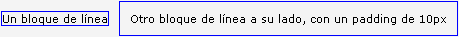Definidos estos dos tipos básicos, hemos de tener en cuenta algo muy importante que muchas veces nos puede resolver problemas: desde la hoja de estilo podemos cambiar el comportamiento de cualquier elemento mediante la propiedad "display", de tal manera que podemos hacer que un elemento de bloque se comporte como uno de línea y viceversa. Esto puede ser útil para muchas situaciones que nos podemos encontrar Así, por ejemplo, si tenemos un enlace al que queremos dar un alto y un ancho:
<a href="http://www.....">Enlace</a>
veremos que no es posible sin más porque "a" es un elemento de línea, pero si en la hoja de estilo le cambiamos el tipo de "display", conseguiremos que se comporte como nos interesa:
a {display: block;
width: 300px;
height: 30px;
}
con lo que habremos conseguido que el enlace se comporte como un elemento de bloque, aceptando las propiedades "height" y "width", de manera que ahora mida 300px de ancho y 30px de alto, en lugar de únicamente lo que mida su contenido.
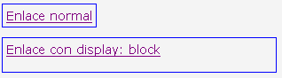Y aquí llega el principal problema de la gente que migra desde el diseño de tablas a XHTML y CSS: ¿cómo dispongo las cajas donde me parece? En primer lugar no olvidemos lo dicho en el apartado anterior: "un elemento de bloque ocupa por defecto el 100% del ancho de la página o de su contenedor (o padre)", de forma que habitualmente nos encontramos con gente que empieza a utilizar elementos "div" (de bloque) y que pregunta por qué sus cajas no se colocan una al lado de otra.
A este respecto debemos aprender la segunda cosa importante respecto a los elementos de bloque: aunque definamos un ancho inferior a ese 100% mediante la propiedad "width", un elemento de bloque ocupa toda su línea en horizontal en el flujo de la página, por lo que produce un corte que impide que otros elementos se coloquen a su lado ocupando el espacio libre en la línea horizontal.
¿Y entonces cómo se hace? Para esto disponemos de la propiedad "float" (flotado), que es la que nos va a permitir colocar elementos de bloque en una misma línea horizontal, siempre que el ancho total nos lo permita.
Tenemos a nuestra disposición tres valores para la propiedad "float":
- float: left, flotado a la izquierda, lo que nos permitirá colocar elementos a su derecha
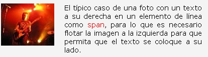- float: right, que flota un elemento a la derecha y nos permite poner otros elementos a su izquierda
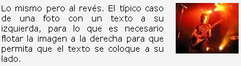- float: none, que impide que un elemento flote (esto sirve para que, si habíamos asignado de forma genérica un flotado a un elemento, podamos eliminárselo a uno en concreto).
Es decir, que si queremos colocar una caja de 100px de ancho y 100px de alto en la parte izquierda de la página, y a su derecha otra caja de las mismas dimensiones, podemos hacerlo de esta manera:
<div id="izquierda"></div>
<div id="derecha"></div>
y poniendo en la hoja de estilo:
#izquierda {width: 100px;
height: 100px;
float: left;
}
#derecha {width: 100px;
height: 100px;
}
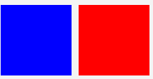con lo que, al poner "float: left" a la primera caja estamos permitiendo que otra se coloque a su derecha en la misma línea horizontal, y esta segunda no necesita ser flotada porque es la primera la que ha permitido usar el espacio a su derecha. Si a esta segunda le quitamos el tamaño de ancho (width), ésta ocupará todo el resto del espacio disponible. En realidad esta segunda caja ocupará el 100% de ancho, como habíamos dicho, pero su contenido será empujado por la caja flotada y comenzará a 100px de la izquierda, sin montarse sobre el contenido de la primera caja. Sin embargo si la caja tiene un fondo (background), o un borde (border), veremos que en realidad ocupa el 100% del ancho, por lo que lo recomendable será asignarle un margen izquierdo del mismo tamaño o superior que la caja flotada que queda a su izquierda:
#derecha {width: 100px;
height: 100px;
margin-left: 110px;
}
Este ejemplo nos muestra el diseño de una estructura o "layout" muy típico: dos columnas a los lados de ancho fijo, con una columna central "líquida", que se adaptará al ancho de la pantalla. Esto se consigue poniendo en primer lugar la caja derecha flotada a la derecha y con un ancho determinado, después la caja izquierda flotada a la izquierda y con su ancho, y finalmente la caja central sin flotar y sin indicar su ancho, lo que hará que se adapte al espacio disponible que dejen las cajas de los lados:
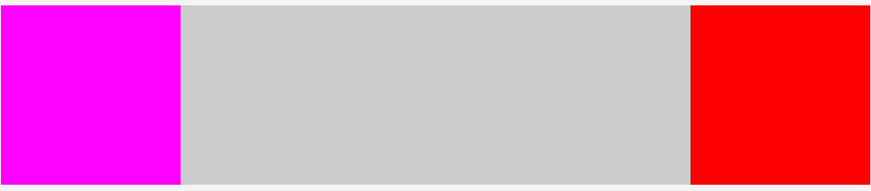HTML:
<div id="contenedor">
<div id="col_der"></div>
<iv id="col_izq"></div>
<iv id="col_cen"></div>
</div>
CSS:
#contenedor {height: 200px;margin:0;}
#col_der, #col_izq, #col_cen {height: 100%;}
#col_der {float: right; width: 200px;background-color: #f00;}
#col_izq {float: left; width: 200px;background-color: #f0f;}
#col_cen {background-color: #ccc;}
Ejemplo
(Este enlace lleva a otra página)
Volver al índiceLa propiedad "position" nos ofrece varias posibilidades para colocar las cajas en los lugares que nos interese. Estas cajas se comportarán de acuerdo a cuatro valores posibles: static, relative, absolute y fixed. Cada una de ellas tendrá un comportamiento particular, que tendremos que tener muy en cuenta a la hora de maquetar.
La posición estática ("static") es la posición que tienen por defecto todas las cajas en HTML. Significa que su colocación en la pantalla será la que indique el flujo del documento, es decir, donde le corresponda estar en el momento que aparece en el código, que en general vendrá determinado por los elementos que le preceden. Si ninguna otra propiedad altera este estado (como los márgenes, por ejemplo), la caja ocupará sencillamente el lugar que le corresponde en el flujo del código.
HTML:<div id="uno"></div>
<div id="dos"></div>
CSS:
#uno, #dos {width: 100px; height: 100px;}
#uno {background-color: #00f;}
#dos {background-color: #f00;}
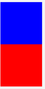La posición relativa de una caja, que se asigna en la hoja
de estilo mediante la propiedad "position:
relative", nos permitirá entre otras cosas
desplazar esa caja con arreglo a cuatro parámetros: top,
right, bottom y left (arriba, derecha, abajo e izquierda).
Estos desplazamientos son referentes a la posición natural de
la caja en el flujo del documento, y admiten tanto valores positivos
como negativos. De manera que si colocamos una caja seguida de otra en
el HTML, y por tanto esta segunda queda justo debajo de la primera en
vertical, y quisiéramos que la segunda montara 40px sobre la
primera, podríamos hacerlo de esta manera:
<div id="tres"></div>
<div id="cuatro"></div>
<div id="cinco"></div>
aplicamos en la hoja de estilo:
#tres, #cuatro, #cinco {width: 100px;
height: 100px;
}
#tres {background-color: #00f;}
#cuatro {background-color: #f00;
position: relative;
top: -40px;
left: 40px;
}
#cinco {background-color: #0f0;}
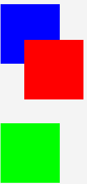con lo que la segunda caja se verá desplazada 40px hacia
arriba (top: -40px) y 40px a la derecha (left: 40px) con arreglo a la posición natural
que le correspondería (pegada a la caja superior), y por lo tanto
montará sobre la primera 40px. Pero además observamos
algo importante: para el flujo del documento, la caja desplazada es
como si no lo hubiera sido, porque sigue ocupando el mismo espacio que
si no la hubiéramos desplazado, por lo que la tercera caja ocupa
su lugar natural en el flujo como si la segunda caja siguiera en su
sitio.
Esto nos puede resolver infinidad de situaciones en las que queremos
colocar elementos con mucha precisión, y no precisamente en
el lugar exacto que les corresponde por el flujo del documento.
La segunda manera de colocar cosas a nuestro antojo en la página sería mediante la posición absoluta (position: absolute). La posición absoluta también es colocada con arreglo a los cuatro parámetros descritos antes (arriba, derecha, abajo e izquierda), pero en este caso no serán desplazamientos con respecto a su posición natural, sino a las cuatro coordenadas de la página.
Así, si queremos colocar una caja en las esquina inferior derecha de la pantalla, utilizaremos:
#derecha {position: absolute;
bottom: 0;
right: 0;
width: 50px;
height: 50px;
background-color: #f00;
}
con lo que la caja será colocada a 0px de la parte inferior y 0px de la derecha de la página.
No hay que olvidar algo crucial: las coordenadas de un elemento en posición absoluta se medirán con respecto a la caja que lo contenga, siempre que ésta a su vez tenga definida una posición relativa o absoluta, y en defecto de esta, a la página completa o elemento padre "html". Hacemos hincapié porque esto es origen de muchas confusiones a la hora de maquetar. Si tenemos una caja de 400px por 400px (por ejemplo), con posición relativa, e introducimos dentro de ella otra caja con posición absoluta y las coordenadas anteriores (bottom: 0; right: 0;), esta segunda caja se colocará en la esquina inferior derecha de la primera caja, no de la página completa, porque al estar dentro de una caja con posición relativa, las coordenadas de ubicación se tomarán con respecto a la primera caja (padre de la segunda). Sólo con quitar la posición relativa de la primera caja, la segunda saltaría a la esquina inferior derecha de la página.
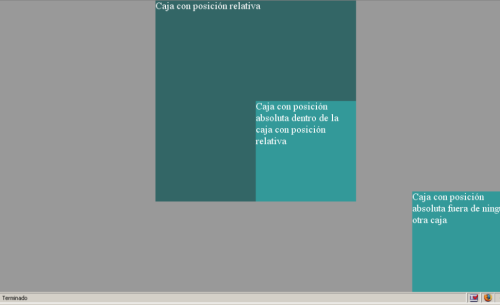(Este enlace lleva a otra página)
Otra cosa a tener en cuenta de los elementos con posición absoluta es que no ocupan espacio físico real en el flujo del documento, así que, por un lado, una caja con esas características podrá ser colocada sobre cualquier otro elemento dentro del documento sin que éste se vea alterado en su posición, y por otro, si después de poner una caja con posición absoluta ponemos otra sin ella, esta segunda ocupará el espacio físico que le hubiera correspondido a la primera, ya que la primera no ocupa espacio, que queda disponible para otro elemento.
Volver al índiceLa posición fija (position: fixed) sirve para colocar una caja en la ventana y que no se mueva de su posición al hacer scroll, al estilo de los "frames". Funciona como la posición absoluta, en cuanto a que se indica su colocación mediante las coordenadas top, right, bottom y left, pero a diferencia de la absoluta, siempre sus coordenadas corresponderán al area de visión (la pantalla completa), nunca a una caja que la contenga.
Ejemplo caja fija(Este enlace lleva a otra página)
El principal problema al usar las cajas fijas es que el navegador "Internet Explorer 6" no entiende esta propiedad, por lo que tendremos que inventarnos una filigrana que nos permita simular el efecto de "position: fixed" y que sea compatible con todos los navegadores. Como veremos en el código del ejemplo, el truco está en ocultar el scroll de la ventana poniendo un "overflow: hidden" a los selectores de las etiquetas html y body (html, body {...}), crear un contenedor que ocupe el 100% de alto y ancho, que será el que tenga el scroll con "overflow: auto", y colocar fuera de él con posición absoluta la caja que queríamos poner con posición fija.
El código CSS a usar sería este:
* {margin:0; padding:0;}
html, body {width:100%;
height:100%;
overflow:hidden;
}
#contenido {width:100%;
height:100%;
overflow: auto;
}
#fijo {
position:absolute;
width:200px;
height:200px;
background:#cff;
left:0;
top:0;
}
aplicado al HTML:
<div id="contenido">
<p>Texto texto texto texto...</p>
</div>
<div id="fijo">Caja simulando la posición fija</div>
Y esto es lo básico que se necesita saber sobre las posiciones de las cajas para empezar a maquetar con CSS. Luego se puede profundizar mucho en todo esto y hay mil cosas diferentes para hacer, pero serán ya la práctica y las horas de vuelo las que nos vayan enseñando todos los truquillos sobre las cajas, CSS y los navegadores.
Volver al índiceComo se puede apreciar, esto no es una guía básica de CSS, un manual de primeros auxilios ni nada que se le parezca; es simplemente una breve orientación para intentar cambiar el concepto de la maquetación de una página Web.
Que hasta ahora hayamos trabajado con tablas no significa que no tengamos ningún concepto de las hojas de estilo, porque también con tablas se puede trabajar con CSS, por eso no pretendemos ofrecer una guía de propiedades, algo que abunda en la red y que seguro que seremos capaces de encontrar sin dificultad si la necesitamos.
Finalmente acabaremos con algunos pequeños consejos desde la experiencia, que nos pueden resultar muy útiles a la hora de maquetar con CSS.
A) - La mayoría de los elementos HTML tienen determinados valores por defecto, y desgraciadamente los distintos navegadores los tratan de maneras diferentes. En la red encontraremos muchas guías sobre hojas de estilo para "resetear" estos valores, y hay mucha gente que las usa siempre.
Pero si no pensamos usarlas (a veces pueden parecernos un poco exageradas), sí que hay algo muy recomendable para aplicar en nuestra hoja de estilo: usar el selector universal asterisco (*), e indicarle las propiedades de margen y relleno a cero.
* {margin: 0; padding: 0;}
Como el selector universal hace referencia a "todos los elementos", esto eliminará el margen y relleno que tengan por defecto "casi" todos los elementos HTML.
B) - Otro pequeño consejo es que si el contenedor principal del que hablábamos no va a ser tan ancho como toda la página y lo queremos centrar, debemos olvidarnos de usar la etiqueta "<center>", poner "text-align center" en el selector "body" y todo ese tipo de cosas que se usan cuando no se empieza por un "doctype" adecuado: la simple propiedad "margin: 0 auto;" en el selector de ese elemento hará que éste se centre en la pantalla.
#contenedor {margin: 0 auto;}
C) - Si alguna vez pensamos usar porcentajes en los tamaños de las cajas (ancho o alto), debemos recordar que un porcentaje siempre se refiere al tamaño del elemento padre en el que esté contenida una caja, luego si ponemos a una caja que mida un 50% y ni su padre ni ninguno de sus ancestros tienen medida definida, esto no funcionará, porque le estaremos diciendo que ponga el 50% de... nada. Es buena práctica para evitar esto establecer un ancho y un alto en los elementos "html" y "body" de esta manera:
html, body {width: 100%; height: 100%;}
Siempre claro está, en función de los tamaños que vayamos a usar. De esta manera cada caja que queramos dimensionar con porcentajes siempre tendrá al menos una referencia de un ancestro sobre la cuál calcular ese porcentaje.
D) - Recuerda que XHTML es una familia que engloba y extiende HTML 4.0, por lo que conserva la mayor parte de sus características, como por ejemplo una importante (gracias, Diego [Al Zuwaga]): un elemento de línea (como "span") nunca debe contener un elemento de bloque (como "p"). Así que hay que olvidarse de colocar elementos como "div" dentro de los enlaces ("a") y cosas por el estilo.
E) - Otra cosa muy frecuente y que por tanto merece la pena recordar es que cuando una caja que no tiene un alto definido (que crecerá según su contenido), lo único que tiene dentro son cajas flotadas (con la propiedad "float"), esa caja no crecerá tanto como las cajas que tiene dentro. Esto es debe a que las cajas flotadas no ocupan espacio físico en el flujo del documento. Generalmente tiene fácil solución, colocando justo antes del cierre de la caja en cuestión una caja vacía como:
<div class="corte"></div>
</div> <--cierre de la caja principal-->
y en la hoja de estilo un selector como:
.corte {clear: both;}
Con esto la caja principal crecerá y las otras quedarán visualmente dentro de ella
F) - Mientras que la mayoría de los navegadores respetan lo mejor que pueden los estándares internacionales, Internet Explorer, en especial la versión 6 (olvidándonos ya de las anteriores), no lo hace muy bien, por lo que siempre es recomendable que diseñemos pensando y comprobando los resultados en un navegador que respete los estándares (como Firefox), y cuando encontremos diferencias de dibujado en Explorer, busquemos maneras de resolverlo (que hay muchas). No es recomendable hacerlo al revés, o veremos que mientras nuestras páginas se ven bien en Explorer, en todos los demás se verán mal (generalmente).
Y bueno, sólo queda desearos suerte, animaros a que investiguéis todo lo que podáis sobre el diseño a través de CSS y sobre todo, que os divirtáis.
Espero que esta pequeña guía os haya podido servir de algo. Con mis mejores deseos.
Mikel Morote Donazar
Volver al índice